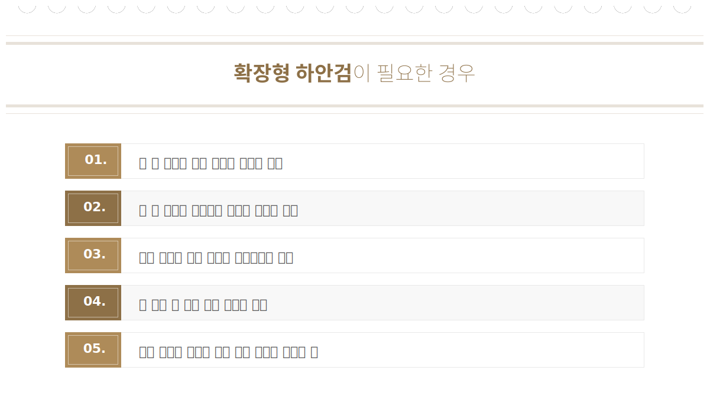
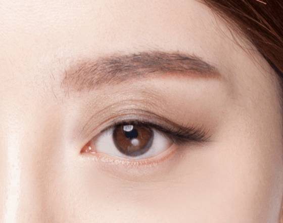
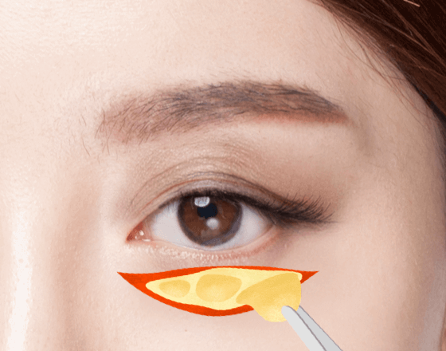
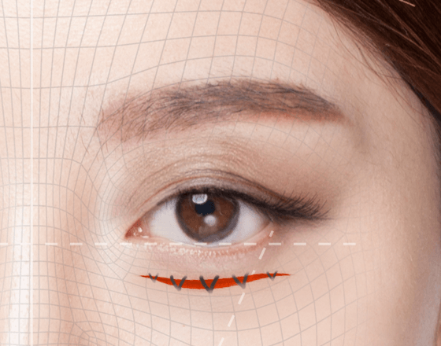
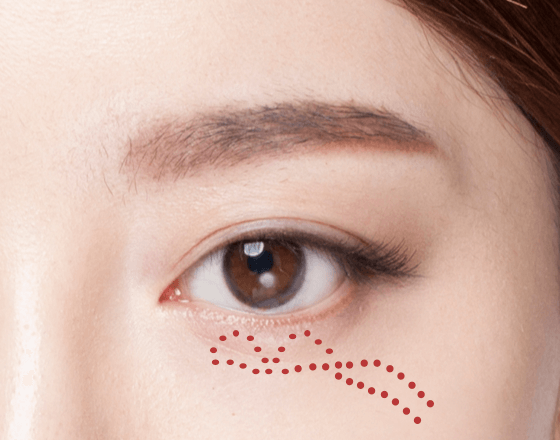
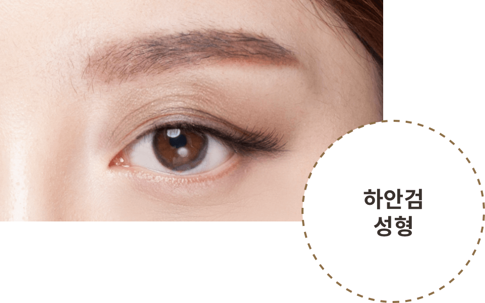
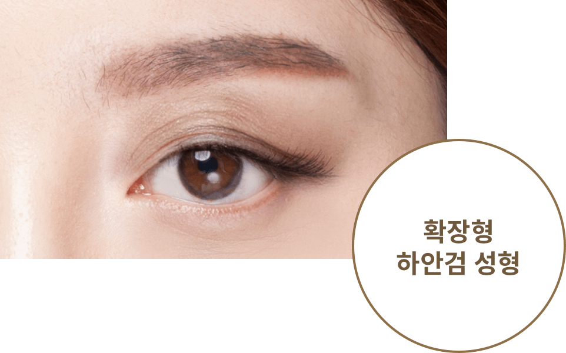

눈 밑 지방과 주름을
생기 있게 UP!
#확장형
하안검 성형
-

수술 시간
1시간
-

마취방법
수면/국소마취
-

실밥제거
4~5일 후
-

내원치료
1~2회
-

회복기간
7일 이내
확장형 하안검 성형이란?
노화가 진행되면서 눈 아래 지방을 싸고 있는 주머니가 늘어나며 눈 밑지방이 돌출되거나 눈 밑 주름이 많아져 더욱
나이들어 보이고 피곤한 인상을 줍니다.확장형 하안검성형은 돌출된 지방과 처진 피부 외 눈물고랑까지 범위가
확장된 수술로 눈 밑 피부를 탄력있게 만들어 젋고 시원한 눈매로 만들어줍니다.
BEFORE

AFTER


확장형
하안검
성형방법
나이가 들어갈 수록 늘어지는 눈밑 지방을 눈 안족 결막을 통해 비교적 간단하게 제거하는 수술방법으로
피곤해 보이는 인상을 건강하고 어려보이는 인상으로 만들어 줍니다.
-

1
수술 전
눈 밑에 돌출된 지방의 범위
와 모양, 근육, 피부 등을 체크
후 시술 계획을 세웁니다. -

2
지방 재배치
눈 안쪽 결막을 절개 후 지방
을 안구 아래의 제자리로 재
배치 합니다. -

3
근막초 고정
지방 재배치 후 아래쪽
연부 조직을 위로 당겨
고정합니다. -

4
세밀한 봉합
절개 부위를 봉합합니다.
하안검 성형과
확장형 하안검 성형의
차이점
단순 하안검성형과 확장형 하안검성형의 차이점을 이해하고 전문의와의
자세한 상담과 진단을 통해 환자분에게 적합한 방법으로 수술을 진행합니다.

VS

눈아래뼈 위쪽에서 빠져나온 지방과
처진 피부만을 교정
눈아래 불거진 지방 외에 눈물고랑 및 처진 앞광대
연부조직까지 거상
박리 범위가 눈물고랑 아래쪽까지 넓다.
단순 하안검 성형보다 긴 회복기간